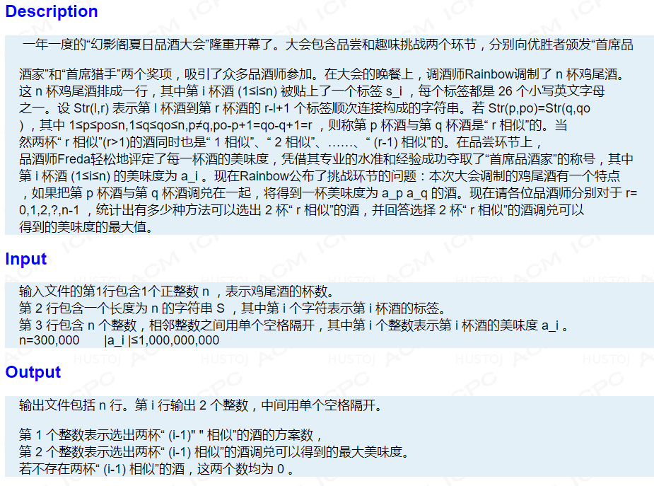
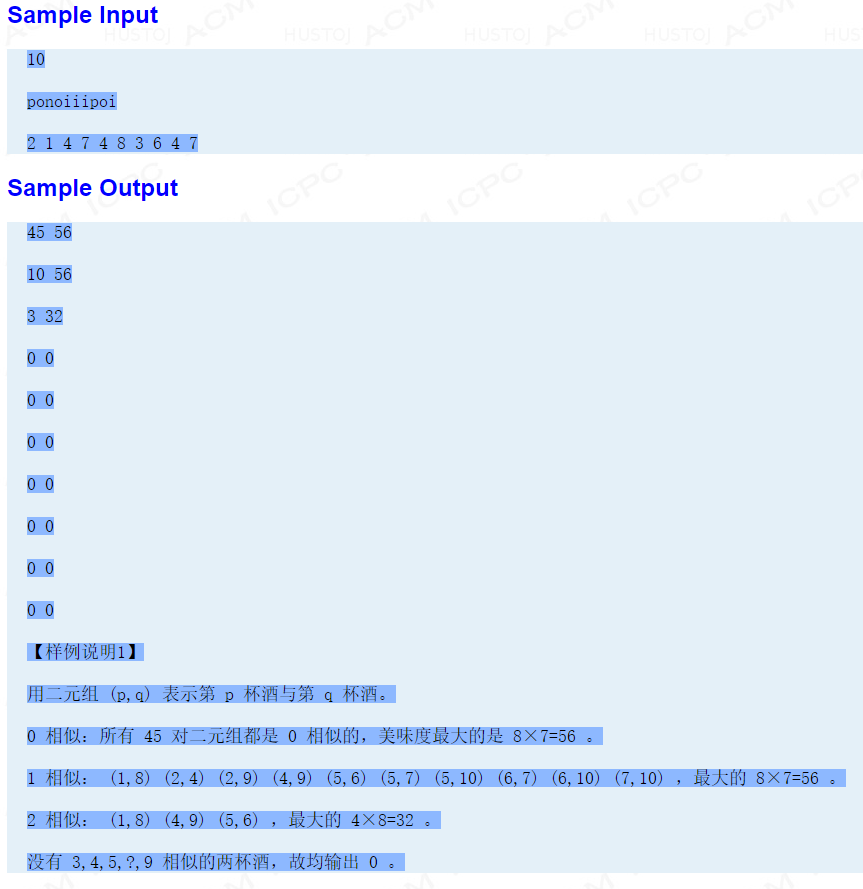
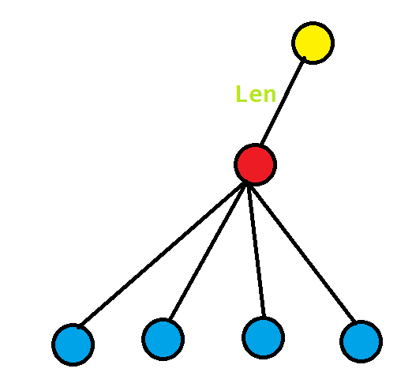
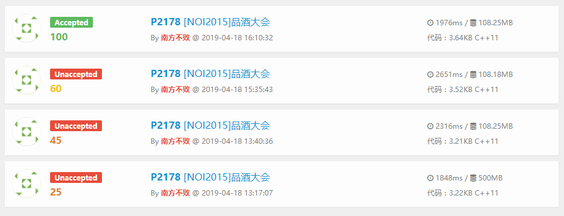
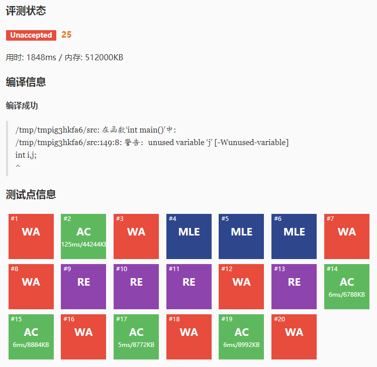
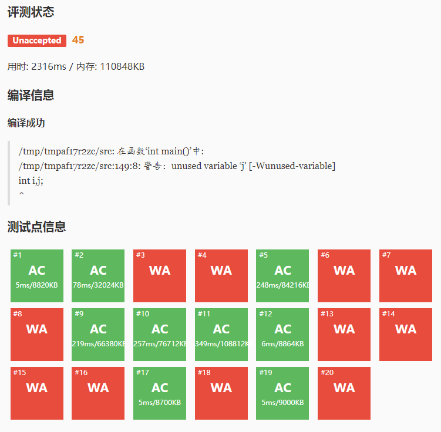
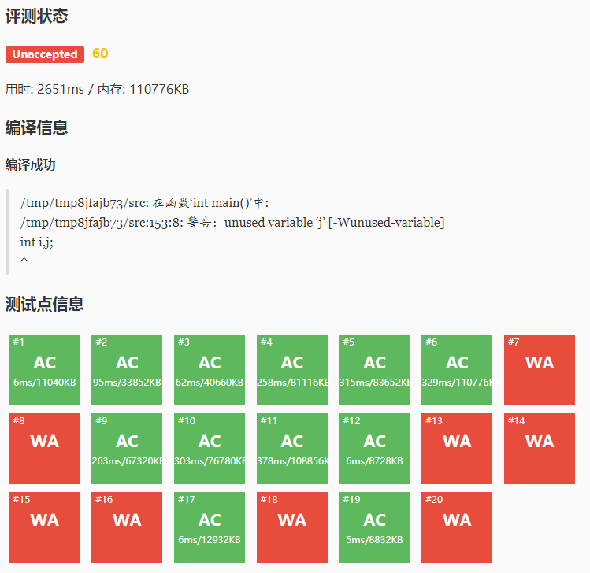
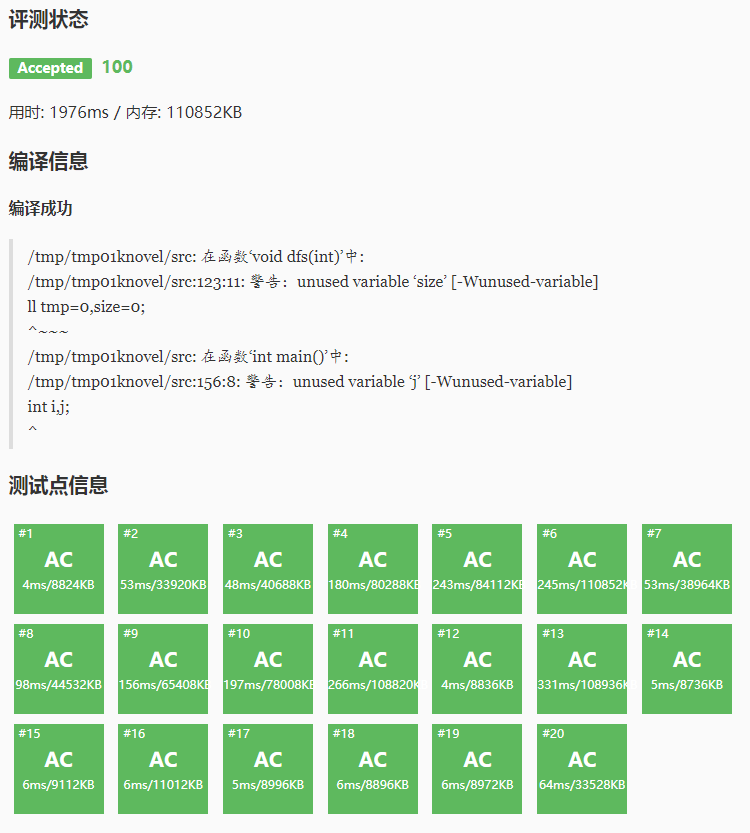

题解
知识点：
后缀树，后缀数组，LCP，树形DP
分析：
这道题是我初学后缀结构的近期训练最后一道练习题，一开始只想到$\Theta(n^2)$的方法和“不存在10相似”的情况。后来看了一年前炜隽哥哥的slide，才知道真正的做法。
这道题的题意是这样的：我们要求出有多少个子串的LCP大于等于每个$i\in [1,n]$中的$i$，第二问要求出每个组当中$a[i]$值两两乘积中最大的一个是多少（而且$a[i]\in \mathbb Z$，也就是说有可能有非正数）。我们发现直接做LCP大于等于的情况很不好写，所以先考虑求出等于的情况，而第二问也不算核心，直接用一个DP记录一下就好了，可以先放一放。
下面先简介两种方法：
方法一：后缀数组
第一问实际上是求有多少个区间$[l,r]使得height[l..r]的最小值为i$，然后我们考虑用并查集维护后缀集合，从$n-1$到$0$枚举每一个可能的后缀长度$i$，在此之前，每个集合内部的任意两个后缀的$LCP$ 都大于$i$。这时假如有两个排名相邻的并且$LCP$ 为$i $的后缀，我们就可以把它们所处的集合合并起来。
具体地，把$height$值从大到小排个序，然后然后把$ans[heght]$的值加上当前合并的两个相邻的集合的大小乘积（因为根据乘法原理，每个区间中，依次枚举左右端点，是有乘积中情况）。然后合并集合。
记录的时候要注意，因为我们合并的时候都是合并排名相邻的一些后缀，所以出现在一个集合中的所有后缀必定是连续的，所以我们只需要记录每个集合的左右端点就可以了。合并的时候也只用更改端点的值就好了。
对于第二问，我们在合并的时候可以把$a[i]$的值也顺路合并（具体方法可见方法二，大同小异）。然后就做完了。
时间复杂度：$\Theta(n\log_2n)$
方法二：后缀树
把后缀树建出来之后，我们直观地发现LCP就变成了LCA（两个点的LCA节点在后缀树上对应的节点的长度值就是LCP的长度）。而每个子树下的后缀节点的个数，就是那棵树的贡献。
如图：

对于每个蓝点的子树统计好后缀节点的个数，然后对其LCA（红点）进行统计，然后途中的“len”就是他们LCP的长度（假设从红点往上一直走了很多个节点后到达了整棵后缀树的根节点（黄点），之间的距离（边权之和）就是len）。
具体地，我们可以先建出后缀树。然后进行树形DP（理解为DFS也行）。怎么统计后缀节点的个数呢？这个相当简单，只需要对其子节点的子树信息进行累加就可以了，而我们知道怎么样的节点才可能是后缀节点。在建树的时候，直接加进去的一定是后缀点，通过一条原来很长完整的边（里面包含不止一个字符的）的分裂得到的点，一定不是后缀点，这个在建树的时候判断一下就好了。但是答案一定是这个吗？
当然不是！
回到那幅图，考虑现在在红点统计答案。这时候的单位贡献就是$len$,小学数学告诉我们：$单位贡献\times数量=总共贡献$，所以我们现在统计数量。数量是有多少个后缀节点对（无序的）产生的贡献，考虑对蓝色点标号$1,2,3,\cdots,k$,每个蓝点为子树（包含蓝点，就是说假如蓝点是后缀点，那也算进去）的总共后缀节点数为$v_1,v_2,v_3,\cdots,v_k$,那么对于红点的贡献数量就是$\displaystyle\sum_{i=1}^{k-1}\sum_{j=i+1}^{k}v_i\times v_j$,这样可以保证不重不漏（大家可以把那四个蓝点的情况直接写出来，看一下对不对，我当时推的式子是$v_1\times v_2+v_1\times v_3+v_1\times v_4+v_2\times v_3+v_2\times v_4+v_3\times v_4$),可以发现它我上面给出的双重和式的意义是一样的。
但是这个式子求出来的最大复杂度是$\Theta(n^2)$的，所以一定不可以通过。
考虑对式子进行展开，先对原式$\times2$,然后再$\div2$,
第一步，我们得到$\text{原式}=\frac{\displaystyle\sum_{i=1}^{k}\sum_{j=1\land j\not =i}^{k}v_i\times v_j}{2}$(举例，就是$\frac{v_1\times(v_2+v_3+v_4)+v_2\times(v_1+v_3+v_4)+v_3\times(v_1+v_2+v_4)+v_4\times(v_1+v_2+v_3)}{2}$)
第二步，我们发现这个式子好像差了点什么，所以继续添加项，添加为$v_1\times(v_1+v_2+v_3+v_4)$，在这里我们多加了一个$v_1^2$,所以把它减去。此时假如大家把后面几项也这样拆开，就可发现后面都是$(v_1+v_2+v_3+v_4)$，前面是$v_i\times$后面的那个括号。初中数学告诉我们，我们应该合并同类项，变成$(v_1+v_2+v_3+v_4)^2$,这样，就是非常简便的了。
第三步，对第二步的式子进行化简，写成原式$=\frac{(\displaystyle\sum_{i=1}^{k}{v_i})^2-\displaystyle\sum_{i=1}^{k}{v_i^2}}{2}$
然后这个式子就可以$\Theta(n)$的时间内求出来，可以接受（具体操作就是对于每一个子节点求一次和与一次平方和就好了）。这种推式子的方法好像和很多题解的方法不同，但是本质要求都是一样的。
对于第二问，我们要设法更新$a[i]$的最大值。因为此题中$a[i]$的值是可正可负的，所以就不可以只记录每个节点下的最大和次大值。参照我去年做过的一道环形DP题（【IOI1998】Polygon）中的思想，同时记录下最大和次大与最小和次小值。因为如果最小和次小值是个负数，两者相乘会变成一个正数，这个正数的有可能比最大值和次大值的乘积要大，所以可以用这个来更新答案。
不过千万注意，一定要弄懂其中的逻辑关系。这里计算出来的值（最小次小的乘积，最大次大的乘积）都只是用来更新$ans[len]$的，而合并到父节点（上图的红点）的信息，依旧是原来的最大最小等等的值（就是更新答案的时候一直都是用原来的信息，不是乘积）。所以说，我们一直用原有的信息去更新每一个值，而不是计算后更新。
具体地，初始化一定要做好。把每个后缀节点的初始最大最小值设为$a[i]$，而次大次小分别设成负无穷和正无穷。加入非后缀节点时（分裂节点），把四个值分别设成正负无穷（因为这些节点本来就需要别的点去更新它们，它们自己本来就没有权值）。而什么东西都没有的根节点，也要设成正负无穷。在树形DP的时候，假如我们需要更新父节点$u$的信息，当前枚举到的子节点是$v$，我们就可以把$u$和$v$的最大最小次大次小拿出来，大的排一遍序，取最大那两个更新$u$节点的信息。对于小的值同理，也是拿出来排一遍序，然后取最小的两个放回去。此处经过计算可得，冒泡排序是理论上计算次数相对少的而写起来又很方便的一种排序，每一次更新只用12次的运算（远远小于快排），所以常数会小很多。不过看到有一种可以直接更新的方法，就是分别比较两个最值，然后直接往后更新，感觉这种好像更快，但是当时我觉得写这种好像风险有点大，怕写WA。如果当前的统计完发现整棵子树的大小小于2，那么就可以离开了，因为构不成两两之间的 LCP了，这样没法更新答案（不过子树大小还是要更新的，后面有用）。
最后的求一次后缀和与后缀最大值，就从后面往前更新（因为题目说$r$相似的两个串同时也是$r-i$相似的），所以假如当前的后缀和还是$0$，那么就把最大值也设成$0$（在计算过程中，最大值有可能是一些不可预知的数）。然后注意细节，注意更新的顺序。
时间复杂度：$\Theta(n)$
小结：
对比两种不同的方法，其实本质上是相同的。方法一中合并$height$的过程就是模拟了后缀树上两两合并LCA的过程，只不过树形结构更加便于理解和实践。两种方法各有优劣，但是理论复杂度上后缀树会更佳一些。实现上，方法一难在第一问的合并（好像挺难写的），方法二难在第二问的统计$a[i]$的答案和细节调错上，毕竟树形结构难以调试，细节超多。不用后缀自动机解题的原因是，后缀自动机想起来没有后缀树好想，但是实现起来却与后缀树大同小异，还要用$parents$树进行再一次的转化，没有这个必要，毕竟树的性质是比DAG要多的，要更为方便的。
代码：
这道题我一共交了四次才AC。我用的是方法二（感觉更好写）。

可以看见其实细节很多。我觉得对于更新第二问的答案时是最为麻烦的。大家千万小心。
第一次：

1 |
|
第二次：

1 |
|
第三次：

1 |
|
第四次：

1 |
|
然后我又交到的UOJ上，发现被人Hack掉了。
1 | in： |
这样的数据可以慢慢调，总能搞好的。
总结：
这是我人生第一道洛谷黑题啊！
虽然用了一天去写，但也感觉很值得。
思路很有趣，很多的实现细节也很有价值。